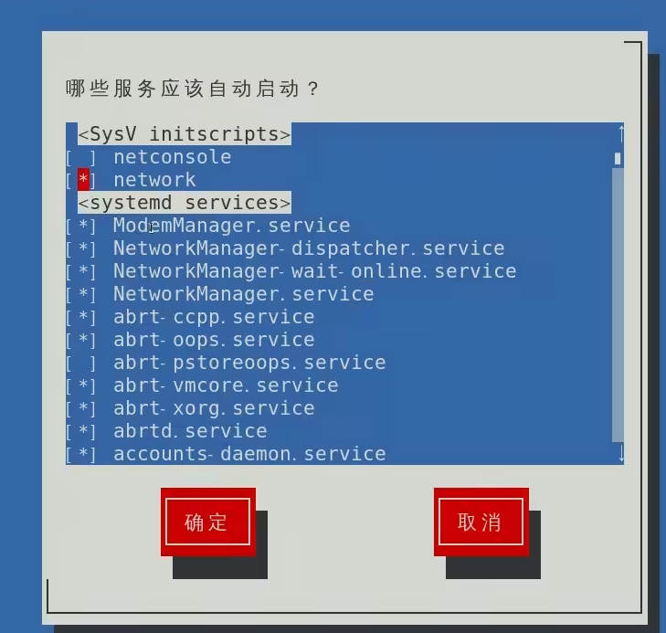
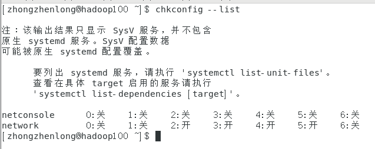
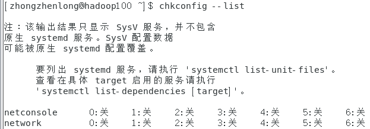
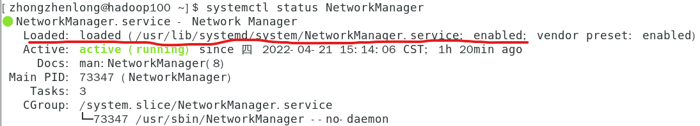
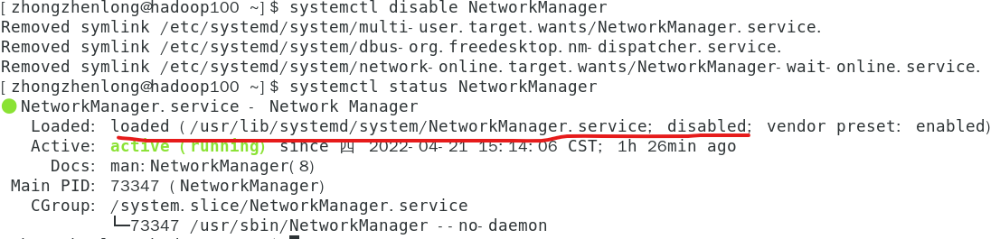
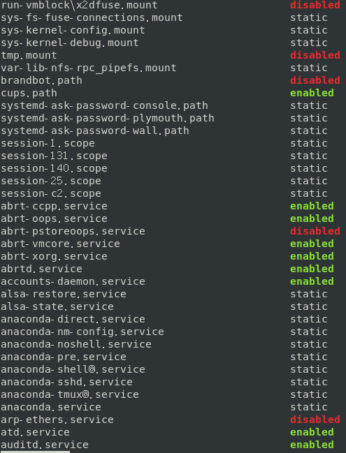
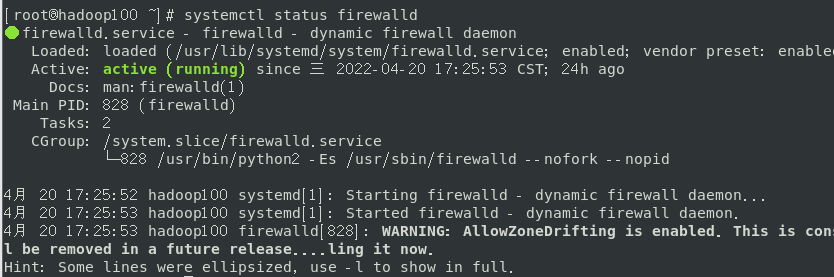

系统管理
1. linux 服务管理
进程和服务的介绍
进程是程序装载入内存，正在被执行的程序。
服务是启动电脑后，常驻内存的一种进程。到关机时才退出。也称守护进程。
service 服务管理
之前修改 ip 后，启动用 service network restart 命令，意思是重启网络服务。
centos 6版本的基本语法：
service 服务名 start|stop|restart|status
查看服务的方法：/etc/init.d/服务名
显示出来的四个，绿色的是可执行程序。
centos 7版本的基本语法：
systemctl start|stop|restart|status 服务名
查看服务的方法：/usr/lib/systemd/system
我们可以关掉 network 和 NetworkManager 服务，这样就不能访问网络了，外部物理机器有ping不通。
建议停掉 network ，启用 NetworkManager。
2. 系统运行级别
输入命令行
终端输入 setup 回车，就会进入一个页面，选择系统服务，然后就进入到系统服务配置页面。

前面带星的是说这个服务开机自启动。无星说明开启不启动，需要手动启动。
选中后按空格，服务就不会自启动或者自启动。
<SysV initscripts> 说明是老版本的启动服务。systemd services 是新版本的服务。
Linux 进程运行级别
老版本：
开机——>BIOS——>/boot——>init 进程——>运行级别——>运行级对应的服务
查看默认级别：vi /etc/inittab
Linux 系统有 7 种运行级别：常用3和5
| 运行级别 | 功能说明 |
|---|---|
| 0 | 系统停机状态，系统默认运行级别不能设为 0，否则不能正常启动。 |
| 1 | 单用户工作状态，root 权限，用于系统维护，禁止远程登录。 |
| 2 | 多用户状态（没有NFS），登录后进入控制台命令模式。 |
| 3 | 完全的多用户状态（没有NFS），登录后进入控制台命令行模式。 |
| 4 | 系统未使用，保留 |
| 5 | X11控制台。登录后进入图形GUI模式 |
| 6 | 系统正常关闭并重启，默认运行级别不能设为6，否则不能正常启动 |
NFS ：network file system
CentOS 7 的运行级别简化为：
multi-user.target 等价于原运行级别3（多用户有网，无图形界面）
graphical.target 等价于原运行级别5（多用户有网，有图形界面）
查看当前运行级别：
systemctl get-default
命令行下转换运行级别：
| 运行级别转换命令 | |
|---|---|
| init 3 | 进入大黑框，需要登录 root 输入密码 |
| init 5 | 进入图形界面，也需要登录用户密码 |
3. 配置开机服务和防火墙
老版本：
chkconfig --list
列出老版本的SysV服务：

假如我们用setup去关闭 network，再回来看，2-6的运行级别被关掉了：

使用命令行操作的话就是：
chkconfig newtork on/off
下面这个操作是把network对应的3级别关掉：
chkconfig --level 3 network off
我们查看 NetworkManager的状态，会发现它的状态是 enabled 的

如果想改成开机不要自启动，直接输入下面的命令：
systemctl disable NetworkManager
再次查看状态：

如果想改成开机自启动，就输入下面的命令：
systemctl enable NetworkManager
查看开机自启动的服务：
systemctl list-unit-files

可以看出服务有三种状态：
| 状态 | 功能说明 |
|---|---|
| enabled | 开机启动 |
| disabled | 开机不启动 |
| static | 不确定，这个服务依赖于其他服务。服务启动用到其他服务A，A没启动它就没法启动。 |
实战：配置防火墙的自启动
防火墙：
老版本：iptables
CentOS 7：fire walld
还记得查看服务状态吗？
systemctl status firewalld，
[防火墙]: https://baike.baidu.com/item/%E9%98%B2%E7%81%AB%E5%A2%99/52767 "防火墙能做什么"

看出是 enabled，是开机自启动的，意味着如果现在输入命令行 systemctl stop firewalld，防火墙会立即停止，但是下次开机，防火墙又自动开启。
要关闭其开机自启动，就要输入 systemctl disable firewalld.service。但是 5 级别下它还是开机自启动的。
4. 关机&重启
| 命令 | 功能说明 |
|---|---|
| shutdown | 1分钟后立即关机 |
| shutdown -c | 撤销关机 |
| shutdown now | 立即关机 |
| shutdown 3 | 3 分钟后关机 |
| shutdown 15:28 | 在 15:28:00 时刻立即执行关机 |
为什么 shutdown 默认会等一会儿再关闭？
因为要执行 sync。
| 基本语法 | |
|---|---|
| shutdown [选项] 时间 | -H，相当于 halt，停机 -r，= reboot 重启 now，立即关机 时间，等待多久后关机 |
| sync | 将数据由内存同步到硬盘中。 |
| halt | 停机，关闭系统，但不断电。 |
| poweroff | 关机，断电 |
| reboot | 重启，等同于 shutdown -r now |